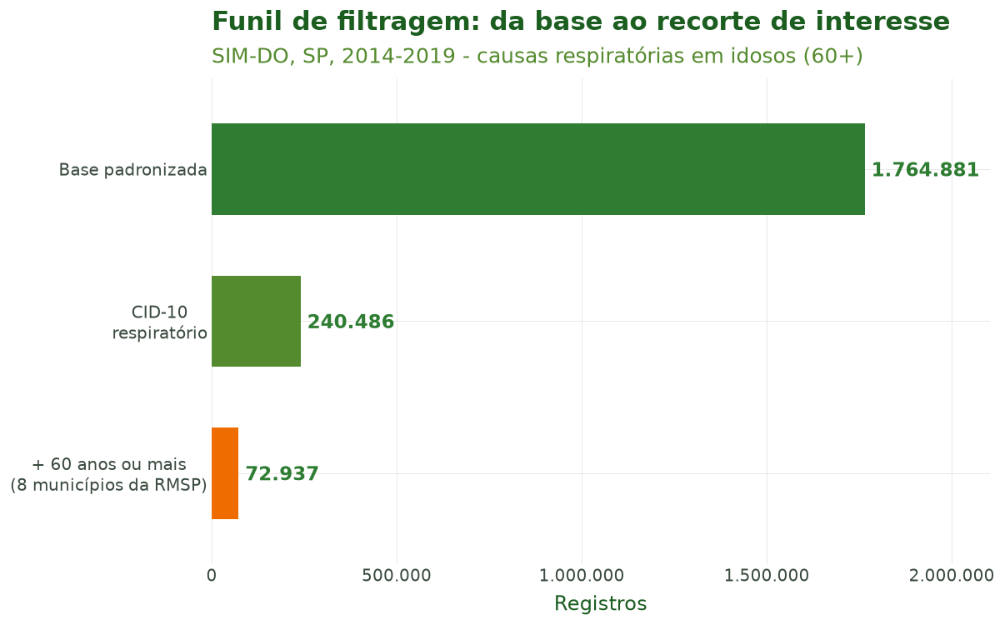
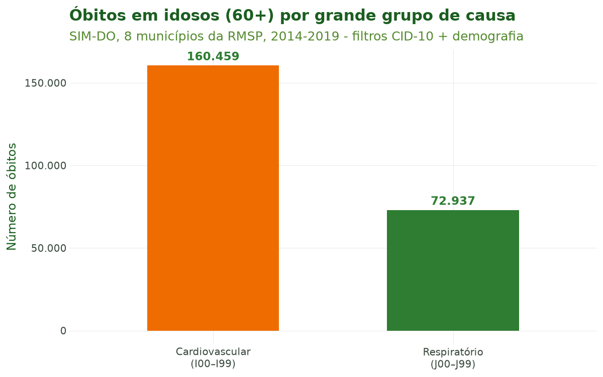
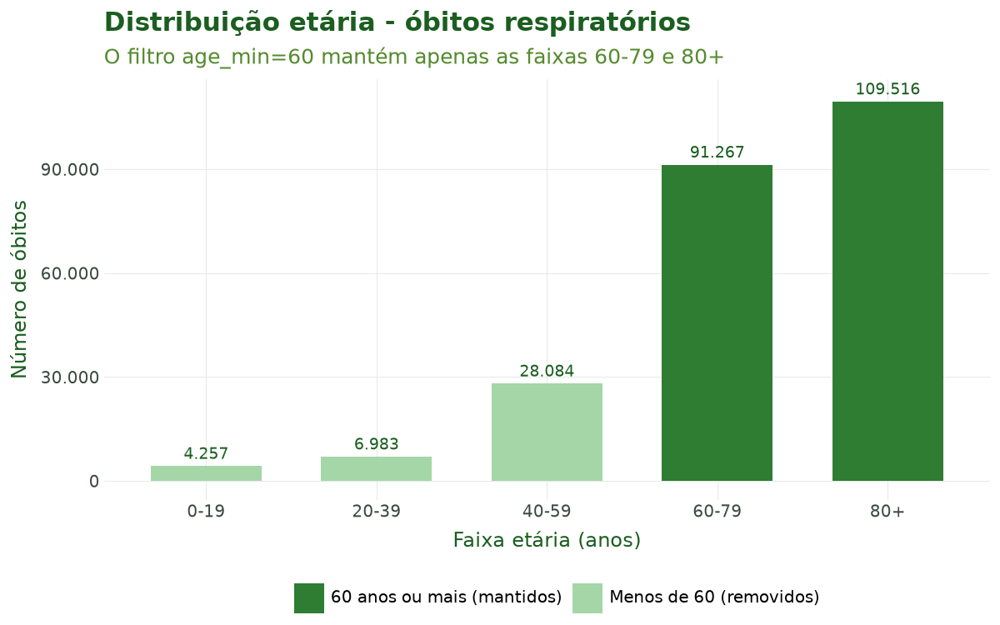
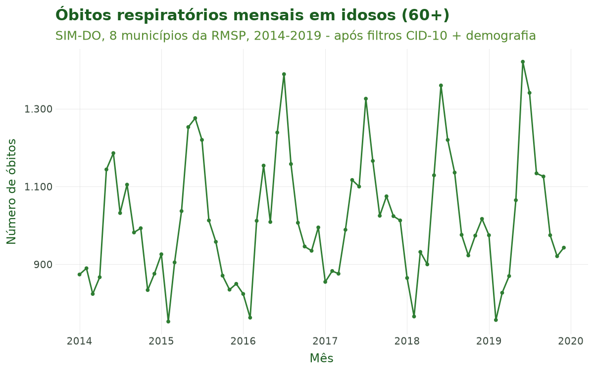

Tutorial 3: Filtragem¶
← Voltar para a Trilha do Pipeline
Objetivo¶
Ao final deste tutorial você será capaz de recortar os microdados de saúde já padronizados
segundo dois eixos complementares, com uma única função, sus_filter():
- Por doença (CID-10) — selecionando códigos específicos, intervalos ou um dos 64 grupos de doença predefinidos do pacote;
- Por características demográficas e geográficas — restringindo por sexo, raça/cor, faixa etária, escolaridade, região, UF ou município.
Você também conhecerá list_disease_groups() e sus_data_cid_select(), que ajudam a descobrir
os nomes dos grupos de doença sem precisar memorizar códigos CID-10.
A filtragem é a terceira etapa do pipeline (importar → limpar → padronizar → filtrar → criar variáveis → agregar → …).
Contexto científico¶
Estudos de clima e saúde raramente analisam todos os óbitos ou internações de uma vez: o interesse recai sobre desfechos sensíveis ao clima em subpopulações vulneráveis. A literatura é consistente ao mostrar que os extremos térmicos afetam de forma desproporcional as causas respiratórias (CID-10 capítulo J, J00–J99) e cardiovasculares (capítulo I, I00–I99), sobretudo entre idosos (Gasparrini et al., 2015; Bhaskaran et al., 2013).
A Classificação Internacional de Doenças, 10ª revisão (CID-10), organiza as causas em
capítulos identificados por letra inicial e em códigos de três a quatro caracteres (OMS, 2016). O
climasus4py traduz essa estrutura em uma sintaxe de filtragem flexível — código único, intervalo
("J00-J99") ou grupo nomeado ("respiratory") — e detecta automaticamente a coluna de causa de
cada sistema do DATASUS (causa_basica no SIM, diagnostico_principal no SIH).
Recortar antes de agregar é também uma boa prática de reprodutibilidade: o histórico do pipeline registra exatamente quais códigos e critérios demográficos foram aplicados, tornando o estudo auditável.
Caso condutor. Investigamos a temperatura e os desfechos de saúde em idosos (60+) na Região Metropolitana de São Paulo, 2014–2019. Neste tutorial recortamos, a partir da base padronizada do Tutorial 2, as causas respiratórias (J00–J99) e cardiovasculares (I00–I99) e restringimos à população idosa (60 anos ou mais) residente em oito municípios da RMSP. O resultado alimenta o Tutorial 4 (Variáveis e Agregação).
Dados utilizados¶
Entrada: a base SIM-DO padronizada em português produzida pelo Tutorial 2 (colunas como
causa_basica, sexo e codigo_municipio_residencia).
| Recorte | Critério | Argumento de sus_filter() |
|---|---|---|
| Causas respiratórias | CID-10 J00–J99 | groups="respiratory" |
| Causas cardiovasculares | CID-10 I00–I99 | codes="I00-I99" |
| Idosos | 60 anos ou mais | age_min=60 |
| RMSP | nomes de 8 municípios | city=[...] |
Pipeline completo¶
Os blocos abaixo reproduzem o que o script
tools/tutoriais/tutorial_03_filtragem.py
executa. Comece carregando o pacote e a base padronizada do tutorial anterior:
import climasus4py as cs
obitos = cs.sus_data_import(system="SIM-DO", uf="SP", year=[2014, 2015, 2016, 2017, 2018, 2019])
obitos_limpo = cs.sus_data_clean_encoding(obitos)
obitos_padr = cs.sus_data_standardize(obitos_limpo, lang="pt")
Explorar grupos de doença¶
list_disease_groups() lista os grupos disponíveis — com rótulo, descrição, códigos CID-10 e se
o grupo é sensível ao clima — e get_disease_group_details() mostra um deles:
grupos = cs.list_disease_groups(lang="pt") # os 64 grupos
sensiveis = cs.list_disease_groups(climate_sensitive_only=True, lang="pt")
cs.get_disease_group_details("respiratory")
sus_data_cid_select() abre uma página no navegador com todos os grupos, para escolher
visualmente. Marque os grupos de interesse e clique em Copiar selecionados: a área de
transferência recebe a linha de código pronta — por exemplo,
cs.sus_filter(rel, groups=["respiratory", "cardiovascular"]) —, bastando trocar rel pelos
seus dados.
cs.sus_data_cid_select(lang="pt") # abre no navegador
# Com os grupos já escolhidos, devolve os códigos CID-10 correspondentes:
selecao = cs.sus_data_cid_select(groups=["respiratory", "cardiovascular"])
selecao.codes # ['J00-J99', 'I00-I99']
Filtrar por CID-10¶
Há duas formas de indicar as causas: pelo grupo nomeado (mais legível) ou pelo intervalo de
códigos (mais explícito). A coluna de causa (causa_basica, no SIM-DO) é detectada
automaticamente. Abaixo, as causas respiratórias são recortadas pelo nome do grupo e as
cardiovasculares, pelo intervalo de códigos:
# (a) Respiratório (J00-J99), pelo nome do grupo:
resp = cs.sus_filter(obitos_padr, groups="respiratory")
# (b) Cardiovascular (I00-I99), pelo intervalo de códigos:
cardio = cs.sus_filter(obitos_padr, codes="I00-I99")
As duas formas são equivalentes: como o grupo "cardiovascular" é definido pelos códigos
I00–I99, cs.sus_filter(obitos_padr, groups="cardiovascular") devolve exatamente os mesmos
registros que cardio.
Filtrar por demografia (idosos 60+ na RMSP)¶
O recorte demográfico é aplicado sobre o subconjunto respiratório. A idade é calculada a partir
do código de idade do DATASUS, sem precisar de nenhuma etapa anterior; o recorte espacial usa o
nome de oito municípios da Região Metropolitana de São Paulo, com o argumento city:
# Oito municípios da RMSP:
RMSP = ["São Paulo", "Guarulhos", "São Bernardo do Campo", "Santo André",
"Osasco", "Mauá", "Carapicuíba", "Diadema"]
resp_idosos = cs.sus_filter(resp, age_min=60, city=RMSP)
cardio_idosos = cs.sus_filter(cardio, age_min=60, city=RMSP)
Os critérios de doença e de demografia também podem ir na mesma chamada — o resultado é o mesmo:
Em vez do nome, você pode usar o código IBGE do município, com 6 ou 7 dígitos, no argumento
municipality; e também filtrar por sexo, raça ou escolaridade ou por região
predefinida:
# Pelo código IBGE (São Paulo = 3550308) e por sexo:
mulheres_sp = cs.sus_filter(resp, sex="Feminino", municipality="3550308")
# Por macrorregião (atalho que resolve para um conjunto de UFs):
sudeste = cs.sus_filter(resp, region="sudeste")
Os valores de sexo, raça e escolaridade seguem o idioma escolhido na padronização ("Feminino"
em português, "Female" em inglês).
Ao final desta etapa temos resp_idosos e cardio_idosos — os recortes de interesse que
alimentarão o Tutorial 4.
Características das funções¶
sus_filter()¶
Filtra por doença e por características demográficas e geográficas. Todos os critérios são opcionais e se combinam (um registro precisa atender a todos); sem nenhum critério, os dados voltam inalterados.
| Argumento | Descrição |
|---|---|
groups |
Grupo(s) de doença nomeado(s): "respiratory", "cardiovascular", "dengue", … |
codes |
Código(s) ou intervalo(s) CID-10: "J18", ["I21", "I22"], "J00-J99" |
icd_column |
Coluna de causa; sem ele, é detectada automaticamente |
match_type |
"starts_with" (padrão) ou "exact" |
age_min / age_max |
Idade mínima e máxima, em anos; sem age_max, não há limite superior |
sex / race / education |
Valores no idioma dos dados: "Feminino", "Parda", … |
uf |
UF(s), pela sigla ("SP") ou pelo código IBGE ("35") |
region |
Grupo predefinido de UFs ("sudeste", "semi_arido", …) |
municipality |
Código(s) IBGE de município, com 6 ou 7 dígitos |
city |
Nome(s) de município |
date_start / date_end |
Período, no formato "AAAA-MM-DD" |
drop_ignored |
True remove os valores "Ignorado" e vazios das variáveis demográficas |
Retorno: os dados filtrados, com o estágio filter e os critérios aplicados registrados no
histórico do pipeline.
list_disease_groups() e get_disease_group_details()¶
Listam os grupos de doença e os detalhes de um grupo. Não alteram os dados — servem para
descobrir os nomes a usar em sus_filter(groups=...).
| Argumento | Descrição |
|---|---|
climate_sensitive_only |
True lista apenas os grupos sensíveis ao clima |
lang |
"pt" (padrão), "en", "es" |
sus_data_cid_select()¶
Seletor visual de grupos de doença.
| Argumento | Descrição |
|---|---|
output |
"browser" (página no navegador, padrão), "console" (lista no terminal) ou "notebook" (seletor dentro do notebook; requer pip install ipywidgets) |
climate_sensitive_only |
True mostra apenas os grupos sensíveis ao clima |
groups |
Grupos já escolhidos (dispensa a interface) |
lang |
"pt" (padrão), "en", "es" |
Retorno: a seleção, com os grupos (.groups) e os códigos CID-10 (.codes). No modo
"browser", a escolha é feita na página e copiada com o botão Copiar selecionados.
Sintaxe de códigos CID-10¶
Um intervalo "J00-J99" é expandido para a sequência de códigos J00, J01, …, J99. O
parâmetro match_type define como cada código é comparado à coluna de causa:
"starts_with"(padrão) — prefixo:"I10"casa"I10","I100"e"I109", o que reflete a hierarquia da CID-10;"exact"— igualdade exata:"I10"casa apenas"I10".
Resultados ilustrados¶
Tabela 1. Grupos de doença CID-10 de interesse no caso condutor (de list_disease_groups()).
| Grupo | Códigos CID-10 | Sensível ao clima | Descrição |
|---|---|---|---|
"respiratory" |
J00-J99 | Sim | Doenças Respiratórias |
"cardiovascular" |
I00-I99 | Sim | Doenças Cardiovasculares |
"pneumonia" |
J12-J18 | Sim | Pneumonia |
"ischemic_heart" |
I20-I25 | Sim | Doença Isquêmica do Coração |
Tabela 2. Funil de filtragem: registros mantidos a cada etapa.
| Etapa | Registros | % da base |
|---|---|---|
| Base padronizada (Tutorial 2) | 1.764.881 | 100,0 |
| CID-10: respiratório (J00–J99) | 240.486 | 13,6 |
| CID-10: cardiovascular (I00–I99) | 521.349 | 29,5 |
| + demografia: respiratório, 60+, 8 municípios da RMSP | 70.742 | 4,0 |
| + demografia: cardiovascular, 60+, 8 municípios da RMSP | 156.794 | 8,9 |

Figura 1. Funil de filtragem. Cada barra mostra quantos registros permanecem após a base padronizada, o recorte por CID-10 (respiratório, J00–J99) e o recorte demográfico (idosos 60+ residentes em oito municípios da RMSP).

Figura 2. Óbitos em idosos (60+) por grande grupo de causa, após a filtragem combinada (CID-10 + demografia). A comparação entre os capítulos respiratório (J) e cardiovascular (I) é o ponto de partida da análise de sensibilidade ao clima dos próximos tutoriais.

Figura 3. Distribuição etária dos óbitos respiratórios no estado. O filtro age_min=60
mantém apenas as faixas 60–79 e 80+, deixando explícito o efeito do recorte demográfico sobre a
população analisada.

Figura 4. Série mensal de óbitos respiratórios em idosos (60+) em oito municípios da RMSP, 2014–2019, após a filtragem. A sazonalidade de inverno — esperada para causas respiratórias — já aparece no recorte e será confrontada com a temperatura nas etapas de clima e modelagem.
Referências¶
- Bhaskaran, K., Gasparrini, A., Hajat, S., Smeeth, L., & Armstrong, B. (2013). Time series regression studies in environmental epidemiology. International Journal of Epidemiology, 42(4), 1187–1195.
- Gasparrini, A., Guo, Y., Hashizume, M., et al. (2015). Mortality risk attributable to high and low ambient temperature: a multicountry observational study. The Lancet, 386(9991), 369–375.
- Organização Mundial da Saúde. (2016). CID-10: Classificação Estatística Internacional de Doenças e Problemas Relacionados à Saúde, 10ª revisão.